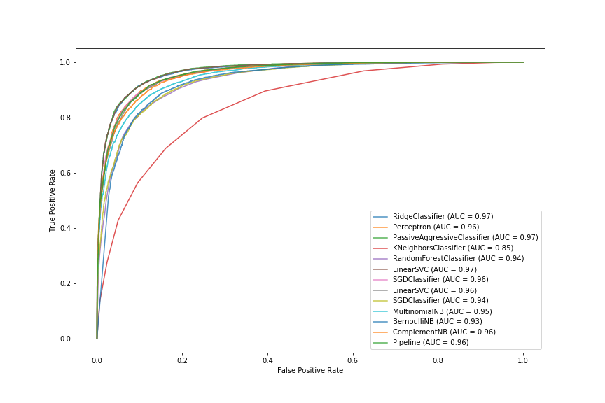
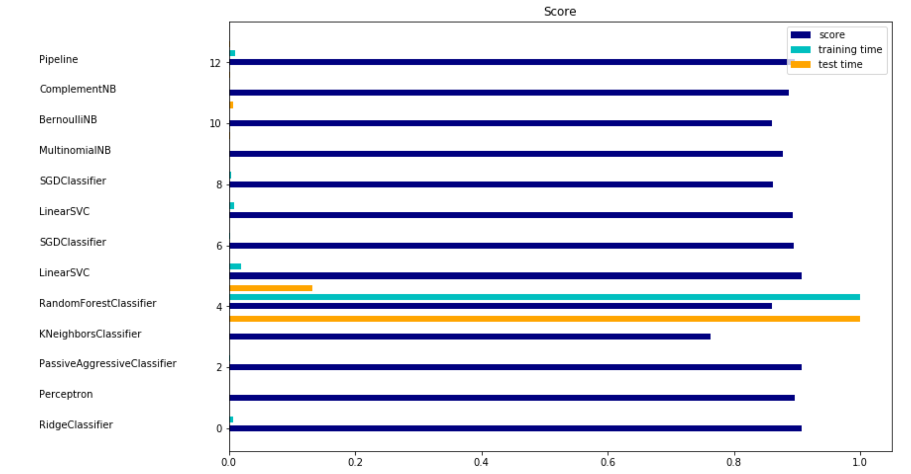

Sentiment Analysis
Receiver Operating Characteristic Chart

Illustrates the diagnostic ability of a binary classifier system as its discrimination threshold varies. It plots the true positive rating against the false positive rating. The auc (area under the curve) is a number between 0 and 1, and can be used as a way to compare different models. A number closer to one represents a system that is better at identifying a true positive, a number closer to 0 would be the inverse and would identify a true negative as a false positive and number close to 0.5 would represent an uninformative classifier
Accuracy Scores and Training/Testing Times for Different Models:
The times plotted are a ratio of the classifier which took the most time to train and test.
Best Model: LinearSVC
